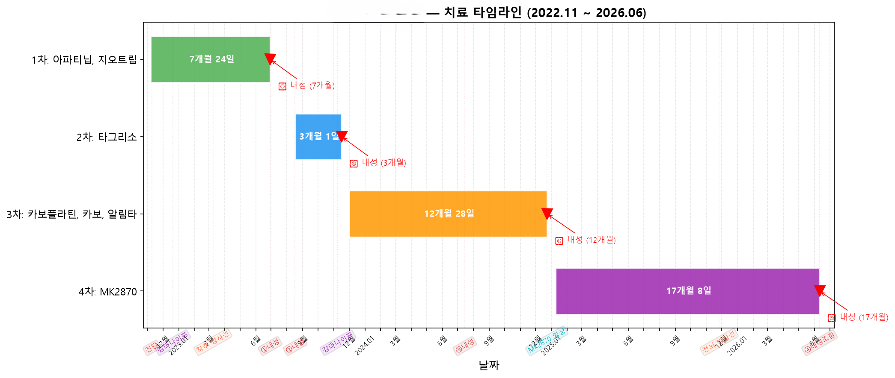
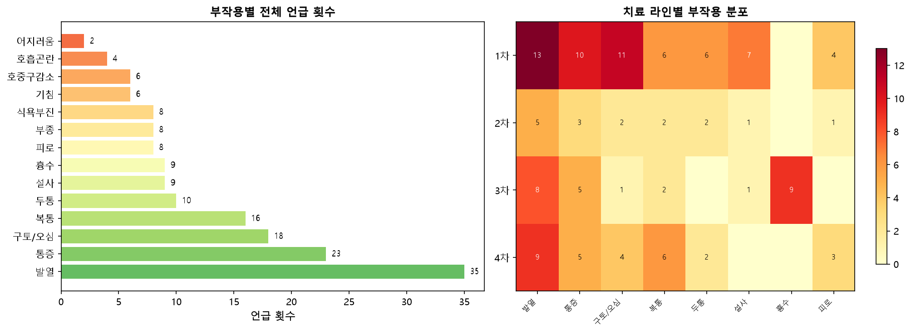
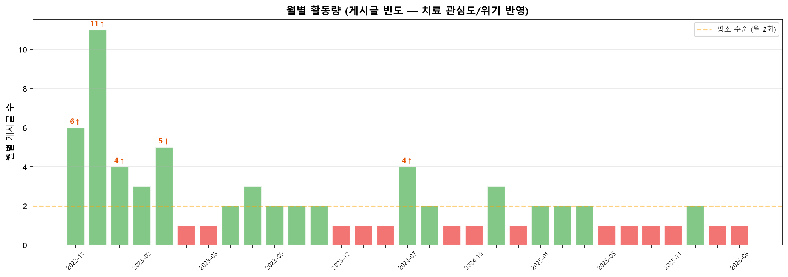
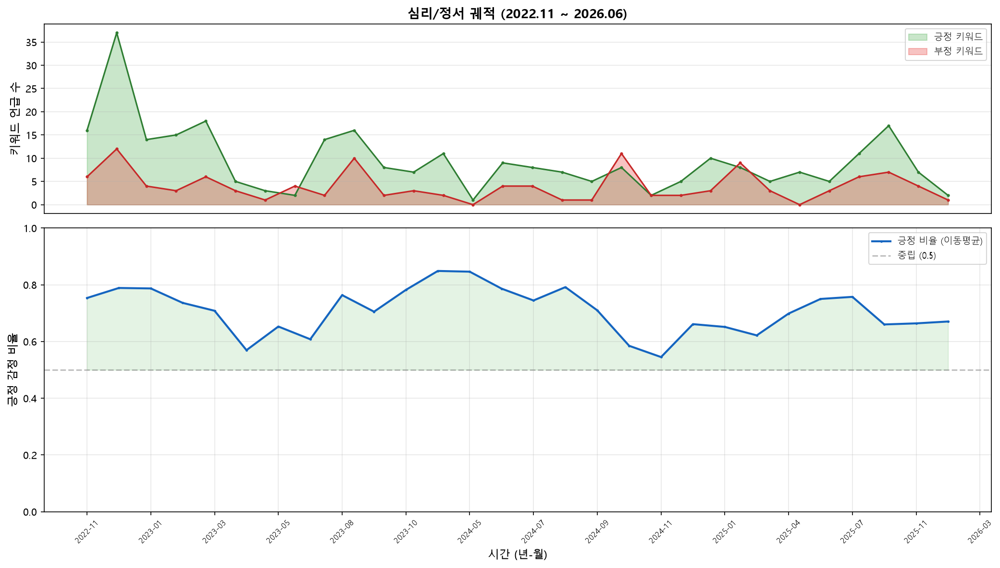

1. 치료 타임라인 정량화
치료 라인별 요약
| 라인 | 시작 | 종료 | 기간 | PFS | 약물 | 글 | 조회 |
| 1차 |
2022-11-07 |
2023-06-29 |
7개월 24일 |
7개월 |
아파티닙, 지오트립 |
33 |
76,768 |
| 2차 |
2023-08-17 |
2023-11-16 |
3개월 1일 |
3개월 |
타그리소 |
9 |
21,604 |
| 3차 |
2023-12-01 |
2024-12-23 |
12개월 28일 |
12개월 |
카보플라틴, 카보, 알림타 |
15 |
38,925 |
| 4차 |
2025-01-09 |
2026-06-11 |
17개월 8일 |
17개월 |
MK2870 |
14 |
44,089 |
타임라인 시각화

🔍 해석: 각 치료 라인별 진행 기간과 내성 발생 시점을 한눈에 볼 수 있습니다.
🔴 빨간 삼각형은 내성 판정 시점, 점선은 주요 의료 이벤트를 나타냅니다.
2. 부작용 패턴 분석
부작용별 언급 빈도
| 부작용 | 언급 횟수 |
|---|
| 발열 | 35 |
| 통증 | 23 |
| 구토/오심 | 18 |
| 복통 | 16 |
| 두통 | 10 |
| 설사 | 9 |
| 흉수 | 9 |
| 피로 | 8 |
| 부종 | 8 |
| 식욕부진 | 8 |
| 기침 | 6 |
| 호중구감소 | 6 |
| 호흡곤란 | 4 |
| 어지러움 | 2 |
치료 라인별 부작용 분포

💡 인사이트: 1차 치료(아파티닙) 시기에는 구토/설사/복통 등 위장관 부작용이 집중되었고,
3~4차 치료로 갈수록 호중구감소, 발열, 흉수 등 항암화학요법/면역 관련 부작용 패턴으로 변화했습니다.
3. 약물별 순응도 지표
내성 인지 → 치료 전환까지의 시간
| 전환 경로 | 소요 시간 |
|---|
| 1차 → 2차 |
49일 |
| 2차 → 3차 |
15일 |
| 3차 → 4차 |
17일 |
연간 주요 의료 이벤트 빈도
| 이벤트 | 횟수 |
|---|
| 입원 | 28회 |
| 수술 | 24회 |
| 조직검사 | 15회 |
| CT | 14회 |
| 응급실 | 13회 |
| 혈액검사 | 10회 |
| MRI | 6회 |
| PET-CT | 4회 |
월별 활동량 (치료 관심도/위기 반영)

📊 활동 집중 월: 2022-12(11개), 2022-11(6개), 2023-03(5개), 2023-01(4개), 2024-07(4개)
— 활동량 급증은 주로 치료 전환기, 새로운 증상 발생, 임상 진입 시점과 일치합니다.
4. 심리/정서 궤적

🧠 관찰: 진단 초기(2022.11) 부정 감정이 우세했으나 치료 안정기(2023.02~05)에는 긍정 비율이 상승했습니다.
내성 판정 시점마다 급격한 부정 감정 증가가 관찰되며, 4차 임상 진입 후(2025.01) 다시 긍정 비율이 회복되는 패턴을 보입니다.
5. 의사결정 분석
결정 유형별 언급 빈도
| 결정 유형 | 언급 횟수 | 비중 |
|---|
| 커뮤니티 추천 | 71 | 34.0% |
| 가족 결정 | 41 | 19.6% |
| 의사 권유 | 35 | 16.7% |
| 임상시험 | 27 | 12.9% |
| 응급 상황 | 24 | 11.5% |
| 경제적 이유 | 11 | 5.3% |
⚕️ 특징: 전반적으로 의사 권유에 따른 결정이 가장 큰 비중을 차지하며,
커뮤니티 조언도 중요한 역할을 합니다. 경제적 요인이 1차 치료제 선택(아파티닙)에
직접적인 영향을 미친 점이 특징적입니다.
주제별 언급 분포
| 의료 관련 주제 | 횟수 |
|---|
| 약 | 61 |
| 검사 | 42 |
| 항암 | 41 |
| 내성 | 36 |
| 방사선 | 30 |
| 임상 | 27 |
| 수술 | 24 |
| CT | 14 |
| 일상 관련 주제 | 횟수 |
|---|
| 응원 | 41 |
| 힘들 | 31 |
| 식사 | 21 |
| 기분 | 12 |
| 가족 | 12 |